Welcome to the official Manchester United website. Here you can find the latest news, match updates, player profiles, and more about the greatest football club in the world.Manchester United Football Club is one of the most iconic and successful sports institutions in the world. Founded in 1878 as Newton Heath LYR, the club has risen from its humble railway roots to become a global titan of football, famously known as the "Red Devils."Based at the legendary Old Trafford stadium—widely known as the "Theatre of Dreams"—the club is currently undergoing a historic transformation. Under the leadership of INEOS and head coach Michael Carrick, United is embarking on a new era, which includes ambitious plans for a world-class 100,000-capacity stadium to redefine the future of English football.A Legacy of ExcellenceThe club’s history is built on resilience and triumph. From the pioneering "Busby Babes" and the emotional recovery after the Munich Air Disaster to the unprecedented dominance of the Sir Alex Ferguson era, United has defined the standards of the game. Club Honors & Achievements:20 English League Titles (Record)13 FA Cups3 UEFA Champions League Titles1 FIFA Club World CupToday , Manchester United continues to represent the spirit of Manchester—a city of unity, passion, and relentless ambition. Whether through the world-renowned Academy producing the stars of tomorrow or the first team competing at the highest level of the Premier League, the mission remains the same: Glory.

